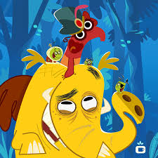

Personagens
Os personagens principais do desenho é Gajah um elefante ,Duda uma Tamanduá, Junior que é um cupim e a rainha cupim que é a líder dos cupins. Para saber mais informações sobre os personagens clique aqui
História
Tromba trem é um desenho de comédia e aventura, no enredo do desenho os personagens fazem uma viagem juntos pela América latina e em cãs lugar que passam encontro um personagem diferente, para saber mais sobre a história do desenho clique aqui

Curiosidades
Para saber mais sobre informações do desenho como por exemplo, quem são os dubladores de cada personagem , em quais países o desenho foi transmitido, sobre o suposto filme do Tromba trem , informações sobre quem criou o desenho ,quantidade de temporadas e episódios clique aqui
Sobre nós
Nós somos alunos da faculdade de tecnologia (FATEC) de São Roque ,SP. Desenvolvemos esse site para desenvolver nossas habilidades na área de programação e falar de uma animação brasileira, por este motivo escolhemos o desenho Tromba Trem, além de ser brasileiro é um desenho muito divertido.